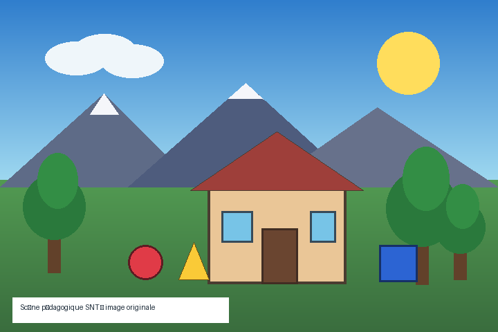

Un parcours clé en main pour suivre la lumière jusqu’aux pixels,
comprendre les couleurs et les EXIF, comparer la compression et transformer
une image par programme.
À la fin, l’élève doit distinguer les photosites du capteur et les
pixels de l’image, retrouver les EXIF, transformer les trois composantes
des pixels par programme et expliquer les algorithmes de construction de
l’image finale.
Durée indicative : 10 h 55, adaptable à environ
quatre semaines.
🧑🏫 Parcours sans dépendance à des photographies externes
Les images, mires, métadonnées et fichiers compressés du paquet sont des
créations originales. La séquence peut donc être utilisée immédiatement,
sans problème de droit d’auteur ni collecte de photographies personnelles.
01
Observer la chaîne d’acquisition · 1 h 15
De la lumière au fichier photographique
🎯 Identifier les étapes physiques et algorithmiques qui conduisent de la scène au fichier.🏷️ Prise de vue · Capteur · Développement numérique
1
👀 Observer et expérimenter
Scènelumière réfléchie ou émise
→
Optiqueobjectif, ouverture, mise au point
→
Capteurmatrice de photosites
→
Conversionmesures numériques
→
Image finalepixels, algorithmes, fichier
Simuler quelques effets de prise de vue
1826Première photographie durable connue
1900Développement de la couleur
1969Premiers capteurs CCD
1975Premier prototype d’appareil numérique
2007Diffusion de la photographie sur smartphone
2
📚 Acquérir les notions et le vocabulaire
Photographie numérique — Acquisition, traitement et
stockage d’une image sous forme de données numériques.
Objectif — Ensemble optique formant une image de la
scène sur le capteur.
Ouverture — Taille du passage de lumière dans
l’objectif.
Temps d’exposition — Durée pendant laquelle le capteur
reçoit la lumière.
Sensibilité ISO — Réglage d’amplification associé à la
luminosité et au bruit de l’image.
Capteur — Composant convertissant la lumière en mesures
électriques puis numériques.
Développement numérique — Ensemble des traitements
transformant les données du capteur en image affichable.
Photographie computationnelle — Utilisation importante
d’algorithmes, parfois sur plusieurs prises de vue, pour produire l’image.
3
🔍 Analyser de manière structurée
Pourquoi l’image enregistrée n’est-elle pas une copie
directe et neutre de la lumière reçue par le capteur ?
Le capteur produit des mesures qui doivent être converties et interprétées.
L’appareil calcule notamment les couleurs, l’exposition, la balance des blancs,
la réduction du bruit, la netteté et la compression. Des réglages et des
algorithmes différents peuvent produire des images différentes à partir d’une
même scène.
4
🧠 Conceptualiser : diagnostiquer et proposer
Deux téléphones photographient la même scène, au même endroit et au même
moment, mais produisent des couleurs, une netteté et un ciel différents.
Établis plusieurs hypothèses et propose une comparaison équitable.
Les objectifs, tailles de capteur, réglages, algorithmes de HDR, réduction du
bruit et netteté peuvent différer. Il faut comparer les fichiers originaux sur
le même écran, relever les EXIF, désactiver les filtres artistiques, photographier
une mire et répéter plusieurs prises de vue dans des conditions contrôlées.
5
🛠️ Schématiser et vérifier
Construis un schéma légendé de l’appareil photo de ton choix. Il doit
présenter les étapes :
entrée de lumière ;
formation de l’image par l’optique ;
mesure par les photosites ;
conversion et traitement ;
création du fichier et des métadonnées.
⚠️ Pièges à éviter
Croire que le capteur produit directement un fichier JPEG terminé.
Présenter le réglage ISO comme une quantité de lumière entrant dans l’objectif.
Attribuer toutes les différences entre appareils au seul nombre de mégapixels.
✅ Contrôle rapide
Quelle étape calcule les couleurs et corrige l’image brute ?
02
Examiner une image pixel par pixel · 1 h 25
Distinguer photosites, pixels, définition et résolution
🎯 Comparer les résolutions du capteur et de l’image, puis calculer définition, taille brute et taille d’impression.🏷️ Photosites · Pixels · Résolution · Profondeur
1
👀 Observer et mesurer
Déplace le pointeur sur l’image pour lire les
coordonnées et les trois composantes du pixel.
Pixel sélectionné
Couleur
Position—
RVB—
Hexadécimal—
Calculateur de définition et d’impression
Définition
Taille RVB brute
Impression
2
📚 Acquérir les notions et le vocabulaire
Photosite — Élément physique du capteur qui mesure une
partie de la lumière reçue.
Pixel — Élément de l’image numérique finale décrit par
des valeurs de couleur.
Dimensions — Largeur et hauteur de l’image en pixels.
Définition — Nombre total de pixels de l’image.
Résolution du capteur — Nombre de photosites du capteur,
souvent annoncé en millions.
Résolution d’impression — Densité de pixels imprimés,
souvent exprimée en pixels ou points par pouce.
Recadrage — Suppression d’une partie des pixels de
l’image.
Rééchantillonnage — Calcul de nouveaux pixels lors d’un
changement de dimensions.
3
🔍 Analyser de manière structurée
Pourquoi un capteur annoncé à 48 millions de photosites ne
produit-il pas toujours des images finales de 48 millions de pixels ?
L’appareil peut regrouper plusieurs photosites, recadrer le capteur, corriger
des bords, changer le ratio ou produire une image de dimensions inférieures
selon le réglage. Les pixels finaux sont calculés par les algorithmes et leur
nombre n’est donc pas nécessairement identique au nombre de photosites.
4
🧠 Conceptualiser : diagnostiquer et proposer
Une image de 800 × 600 pixels est annoncée comme « 300 dpi », puis affichée
sur deux écrans de tailles différentes. Explique ce qui reste identique et ce
qui change.
Le fichier conserve 800 × 600 pixels, soit 480 000 pixels. La taille physique
à l’écran dépend de l’écran et du zoom ; l’étiquette 300 dpi n’ajoute aucun
pixel. Pour l’impression, elle propose une taille physique d’environ
6,8 × 5,1 cm si elle est respectée.
5
🛠️ Calculer et vérifier
À partir de l’inventaire du dossier donnees, compare :
les dimensions ;
la définition ;
le format ;
la taille du fichier ;
l’effet d’un agrandissement sans lissage.
⚠️ Pièges à éviter
Employer définition et résolution comme des synonymes sans préciser le contexte.
Confondre un photosite matériel avec un pixel calculé.
Croire qu’une valeur dpi augmente les dimensions en pixels.
✅ Contrôle rapide
Combien de pixels contient une image de 4000 × 3000 pixels ?
03
Manipuler RVB et la mosaïque de Bayer · 1 h 20
Coder les couleurs et reconstruire les pixels
🎯 Expliquer la profondeur de couleur, la quantification et le passage des photosites filtrés aux pixels RVB.🏷️ RVB · Profondeur · Bayer · Dématriçage
1
👀 Observer et mélanger
Mélange et quantification RVB
Rouge
Vert
Bleu
Couleurs possibles
Une mosaïque de filtres colorés
À observer
Chaque photosite mesure principalement une composante derrière son
filtre. L’algorithme de dématriçage estime ensuite les composantes manquantes
de chaque pixel à partir des photosites voisins.
Le motif contient deux fois plus de filtres verts que de rouges ou de
bleus dans cette représentation classique.
2
📚 Acquérir les notions et le vocabulaire
RVB — Modèle additif décrivant une couleur par ses
composantes rouge, verte et bleue.
Synthèse additive — Production de couleurs par addition
de lumières colorées.
Profondeur de couleur — Nombre de bits utilisés pour
coder les composantes.
Quantification — Remplacement d’une mesure continue par
une valeur choisie dans un ensemble fini.
Filtre coloré — Filtre placé devant un photosite pour
sélectionner une partie du spectre lumineux.
Mosaïque de Bayer — Organisation fréquente de filtres
rouges, verts et bleus sur le capteur.
Dématriçage — Calcul estimant trois composantes de
couleur par pixel à partir de mesures voisines.
Balance des blancs — Correction destinée à neutraliser
une dominante liée à l’éclairage.
3
🔍 Analyser de manière structurée
Pourquoi un photosite placé derrière un filtre rouge ne
fournit-il pas à lui seul un pixel RVB complet ?
Il mesure principalement l’intensité transmise par son filtre rouge. Les
composantes verte et bleue du pixel final doivent être estimées à partir des
photosites voisins. Un pixel est donc une donnée calculée, pas toujours la
copie d’un photosite unique.
4
🧠 Conceptualiser : diagnostiquer et proposer
Une image prise sous une lampe présente une dominante orange. Propose une
méthode automatique, puis explique un risque d’erreur.
L’algorithme peut rechercher des zones supposées neutres ou estimer la couleur
de l’éclairage, puis multiplier différemment les composantes. Il peut se tromper
si la scène est volontairement dominée par une couleur, par exemple un coucher
de soleil ou une pièce entièrement orange.
5
🛠️ Coder et comparer
Crée une palette de huit couleurs en indiquant pour chacune :
les valeurs RVB ;
le code hexadécimal ;
le résultat à 2 bits puis à 8 bits par composante ;
les couleurs primaires qui sont additionnées.
⚠️ Pièges à éviter
Confondre synthèse additive d’un écran et mélange de peintures.
Croire que chaque photosite mesure directement trois couleurs.
Oublier que réduire la profondeur diminue le nombre de niveaux.
✅ Contrôle rapide
Avec 8 bits par composante, combien de niveaux possède chaque composante ?
04
Lire ce que le fichier raconte sur sa prise de vue · 1 h 15
Retrouver les métadonnées EXIF et protéger la localisation
🎯 Retrouver les métadonnées d’une photographie et évaluer les risques liés à leur publication.🏷️ EXIF · Horodatage · Géolocalisation · Vie privée
1
👀 Observer et lire
Fichier
Appareil
Date
Exposition
ISO
Focale
Auteur
GPS fictif
Examiner localement un fichier personnel
Aucun fichier n’est transmis : la lecture est effectuée dans le
navigateur. Le décodeur intégré ne prend en charge qu’une sélection de
balises EXIF JPEG.
Sélectionne un fichier pour afficher ses informations.
2
📚 Acquérir les notions et le vocabulaire
Métadonnée — Donnée qui décrit un fichier, sa création
ou son contenu.
EXIF — Standard de métadonnées utilisé notamment dans
les fichiers issus d’appareils photographiques.
Horodatage — Date et heure associées à la prise de vue
ou à une modification.
Géolocalisation — Coordonnées pouvant indiquer le lieu
de prise de vue.
Données de prise de vue — Ouverture, durée d’exposition,
ISO, focale, orientation…
Miniature — Petite image pouvant être intégrée aux
métadonnées ou au fichier.
Suppression des métadonnées — Création d’une copie ne
contenant plus certaines informations.
Provenance — Informations sur l’origine et l’historique
d’un média.
3
🔍 Analyser de manière structurée
Pourquoi retirer les coordonnées GPS avant de publier une
photo ne suffit-il pas toujours à masquer le lieu ?
Le décor visible, un panneau, un monument, une plaque ou le nom du fichier
peuvent révéler le lieu. D’autres copies peuvent aussi conserver les EXIF.
La protection demande donc de contrôler à la fois les métadonnées, le contenu
visible, les destinataires et les versions déjà publiées.
4
🧠 Conceptualiser : diagnostiquer et proposer
Une photographie scolaire contient le nom de l’élève dans les métadonnées,
la position du domicile et une miniature ancienne qui n’a pas été recadrée.
Établis une procédure de publication sûre.
Travailler sur une copie, supprimer les champs non nécessaires et régénérer
le fichier pour éviter une miniature résiduelle. Vérifier les données avec un
outil indépendant, contrôler le contenu visible, définir les destinataires et
respecter les autorisations de publication. Conserver l’original hors ligne si
nécessaire.
5
🛠️ Examiner et vérifier
Compare les métadonnées du fichier d’exemple avant et après une transformation
ou un export depuis un logiciel. Relève les champs conservés, modifiés ou
supprimés.
⚠️ Pièges à éviter
Croire que toutes les images contiennent les mêmes EXIF.
Publier un original sans vérifier la localisation et l’auteur.
Considérer les métadonnées comme une preuve infaillible et impossible à modifier.
✅ Contrôle rapide
Quelle information peut être enregistrée dans les EXIF ?
05
Comparer volume et qualité · 1 h 15
Choisir un format et comprendre la compression
🎯 Distinguer formats et compressions avec ou sans perte, puis choisir un export adapté.🏷️ RAW · PNG · JPEG · Compression
1
👀 Observer et compresser
Qualité
Taille obtenue

PNG originalJPEG qualité 95JPEG qualité 30
2
📚 Acquérir les notions et le vocabulaire
Format — Convention de représentation et d’organisation
des données dans un fichier.
RAW — Données proches des mesures du capteur, dépendantes
du matériel et destinées au développement.
JPEG — Famille de codages adaptée aux photographies,
couramment utilisée avec perte.
PNG — Format d’image utilisant une compression sans perte
et permettant la transparence.
Compression — Réduction du nombre d’octets nécessaires
pour stocker ou transmettre.
Avec perte — Compression qui ne permet pas de retrouver
exactement toutes les valeurs initiales.
Sans perte — Compression réversible pour les données
représentées.
Artefact — Défaut visible introduit ou renforcé par un
traitement ou une compression.
3
🔍 Analyser de manière structurée
Pourquoi enregistrer plusieurs fois une image JPEG après
des modifications peut-il dégrader progressivement sa qualité ?
Chaque nouvel encodage avec perte peut quantifier et simplifier à nouveau les
données déjà altérées. Les erreurs s’accumulent, surtout avec une qualité
faible. Il est préférable de conserver un original ou un format de travail sans
perte et de produire le JPEG de diffusion à la fin.
4
🧠 Conceptualiser : diagnostiquer et proposer
Un site accepte une image de 2 Mio maximum. La photographie doit rester
lisible sur un écran mais ne sera pas imprimée. Propose une procédure de
réduction justifiée.
Conserver l’original, recadrer l’inutile, réduire les dimensions à l’usage
d’écran, puis encoder une copie JPEG avec une qualité suffisante. Comparer la
taille et les détails importants à 100 %, vérifier les EXIF et ne pas se limiter
à changer l’extension du fichier.
5
🛠️ Comparer et vérifier
Exécute comparer_compression.py et construis un tableau
comparant PNG, JPEG qualité élevée et JPEG qualité faible :
taille en octets ;
dimensions ;
pertes visibles ;
erreur calculée ;
usage conseillé.
⚠️ Pièges à éviter
Confondre extension du nom et véritable format du fichier.
Réenregistrer l’unique original avec une compression destructive.
Comparer les tailles sans vérifier les dimensions et la qualité.
✅ Contrôle rapide
Quelle affirmation décrit une compression avec perte ?
06
Agir sur les trois composantes des pixels · 1 h 35
Transformer une image par programme
🎯 Programmer ou expliquer le négatif, les niveaux de gris, le seuillage et l’extraction de contours.🏷️ Traitement d’image · Python · Pixels voisins
1
👀 Observer et transformer
Transformer les composantes des pixels
2
📚 Acquérir les notions et le vocabulaire
Traitement d’image — Algorithme transformant les pixels
ou produisant des informations à partir d’eux.
Négatif — Transformation remplaçant chaque composante
c par 255 − c en 8 bits.
Niveau de gris — Pixel dont les trois composantes sont
égales.
Luminance — Mesure calculée de la clarté perçue à partir
des composantes.
Seuillage — Classement des pixels de part et d’autre
d’une valeur limite.
Pixel voisin — Pixel situé à proximité dans la matrice.
Contour — Zone de forte variation entre pixels voisins.
Histogramme — Répartition du nombre de pixels selon leurs
valeurs.
3
🔍 Analyser de manière structurée
Pourquoi la moyenne simple
(R + V + B) / 3 et une formule de luminance ne donnent-elles pas
exactement le même niveau de gris ?
La moyenne attribue le même poids aux trois composantes. Une formule de
luminance donne davantage de poids au vert et moins au bleu pour approcher la
sensibilité visuelle humaine. Les deux algorithmes sont cohérents mais répondent
à des modèles différents.
4
🧠 Conceptualiser : diagnostiquer et proposer
Un algorithme de contours détecte trop de détails dans une image bruitée et
presque aucun dans une image sombre. Établis un diagnostic et propose une
chaîne de traitement.
Convertir en luminance, réduire le bruit, éventuellement corriger le contraste,
puis comparer des voisins sur une zone plus large. Le seuil peut être adapté à
l’image ou à des régions. On valide sur plusieurs images et on distingue faux
contours et contours manqués.
5
🛠️ Programmer et vérifier
Exécute et modifie les scripts :
transformer_pixels.py ;
extraire_contours.py ;
analyser_image.py.
Ajoute une transformation personnelle agissant explicitement sur les trois
composantes RVB et documente son effet.
⚠️ Pièges à éviter
Modifier l’image source sans conserver l’original.
Oublier de maintenir les valeurs entre 0 et 255.
Conclure qu’un contour détecté correspond nécessairement à un objet réel.
✅ Contrôle rapide
Quel négatif correspond à une composante de valeur 40 en 8 bits ?
07
Du calcul automatique à la photographie computationnelle · 1 h 20
Expliquer les algorithmes de construction de l’image finale
🎯 Expliciter les algorithmes de prise de vue et identifier les étapes de construction de l’image finale.🏷️ Exposition · Autofocus · Fusion · Provenance
1
👀 Observer la chaîne algorithmique
Fusion d’images
Un smartphone peut combiner plusieurs prises pour réduire le bruit,
étendre la dynamique, créer un panorama ou améliorer la netteté. L’image
finale peut donc ne correspondre à aucun instant unique.
Image, preuve et confiance
Les retouches, montages et images générées rendent l’examen du contexte,
de la source et de la provenance indispensable. Une métadonnée peut aider,
mais elle peut aussi manquer ou être modifiée.
2
📚 Acquérir les notions et le vocabulaire
Exposition automatique — Calcul de réglages destinés à
obtenir une image exploitable.
Autofocus — Algorithme et mécanisme de mise au point
automatique.
Stabilisation — Compensation partielle des mouvements
de l’appareil.
Réduction du bruit — Traitement limitant les variations
indésirables, au risque de lisser des détails.
HDR — Combinaison ou représentation d’une plage étendue
de luminosités.
Fusion d’images — Calcul utilisant plusieurs images pour
en produire une nouvelle.
Retouche — Modification volontaire d’une image après ou
pendant sa construction.
Authenticité et provenance — Informations permettant
d’évaluer l’origine et l’historique du média.
3
🔍 Analyser de manière structurée
Pourquoi un algorithme de réduction du bruit peut-il
supprimer de vrais détails de l’image ?
Le bruit et certains détails fins sont tous deux des variations locales. Si le
traitement considère une texture, des cheveux ou des étoiles comme des
variations aléatoires, il les lisse. Le réglage cherche donc un compromis entre
bruit visible et conservation des détails.
4
🧠 Conceptualiser : diagnostiquer et proposer
Une photographie très impressionnante circule sans fichier original, sans
source identifiable et avec des ombres incohérentes. Propose une démarche de
vérification sans prétendre conclure uniquement à l’œil.
Rechercher la publication la plus ancienne et son auteur, comparer les versions,
examiner le contexte et les affirmations associées, vérifier les métadonnées si
l’original existe et chercher des confirmations indépendantes. Les anomalies
visuelles sont des indices, pas une preuve suffisante de trucage.
5
🛠️ Expliquer et vérifier
Choisis une fonctionnalité parmi HDR, panorama, mode nuit, portrait ou
stabilisation. Produis une fiche expliquant :
les données d’entrée ;
les étapes algorithmiques ;
le bénéfice recherché ;
les erreurs ou artefacts possibles ;
les tests permettant de l’évaluer.
⚠️ Pièges à éviter
Présenter une image finale comme une mesure brute du capteur.
Croire qu’un traitement améliore tous les détails sans compromis.
Déclarer une image vraie ou fausse uniquement à partir d’un indice visuel.
✅ Contrôle rapide
Quel procédé peut combiner plusieurs expositions d’une même scène ?
08
Produire, transformer, documenter et publier · 1 h 50
Projet intégrateur : un laboratoire photographique responsable
🎯 Mobiliser l’ensemble du thème dans une production reproductible, critique et respectueuse des données et des droits.🏷️ Projet · Publication · Archivage · Validation
1
👀 Observer la mission
Mission
Produire une photographie numérique documentée, transformée par un
programme et préparée pour une publication responsable.
Ressources
Utiliser les images originales fournies ou une photographie autorisée ne
révélant aucune donnée personnelle sensible.
Préparer le rapport de projet
2
📚 Stabiliser les notions
Cahier des charges — Objectif, public, contraintes et
critères de réussite du projet.
Original — Fichier source conservé sans écrasement par
les transformations de diffusion.
Copie de travail — Version destinée aux transformations
et aux essais.
Licence et droit d’usage — Conditions permettant de
modifier et diffuser une image.
Crédit — Mention de l’auteur ou de la source.
Validation — Comparaison des résultats à des critères
définis.
Archivage — Conservation organisée des fichiers, formats,
métadonnées et copies.
Sobriété — Choix de dimensions, formats et duplications
adaptés à l’usage réel.
3
🔍 Analyser l’archivage
Pourquoi le fichier de publication ne doit-il pas être la
seule copie conservée du projet ?
La publication peut être redimensionnée, compressée et dépourvue de métadonnées.
Elle ne permet pas toujours une nouvelle édition ou un archivage de qualité.
Il faut conserver l’original, le code ou les réglages, une copie de travail et
la documentation, selon une politique de sauvegarde proportionnée.
4
🧠 Conceptualiser : diagnostiquer et proposer
Le projet final est techniquement réussi, mais utilise une photo trouvée en
ligne sans auteur, conserve une position GPS privée et ne documente pas les
transformations. Reformule le processus de production.
Utiliser une image originale ou sous licence compatible, conserver la source et
le crédit, travailler sur une copie, documenter le code et les paramètres,
retirer les données non nécessaires, puis produire un export adapté. Le rapport
doit permettre de reproduire la transformation et d’identifier ses limites.
5
🛠️ Produire et valider
Livrables attendus
image originale ou source autorisée ;
fiche des dimensions, pixels et profondeur ;
métadonnées analysées ;
programme transformant les composantes RVB ;
image obtenue et histogramme ;
comparaison d’au moins deux formats ou qualités ;
explication des algorithmes de construction ;
version de publication sans donnée excessive ;
sources, droits et crédits ;
protocole de validation.
Dimension
Réussite attendue
Acquisition
Étapes physiques et algorithmiques correctement distinguées.
Pixels
Photosites, pixels, définition, résolution et profondeur maîtrisés.
Métadonnées
EXIF retrouvées et risques de publication analysés.
Programme
Transformation explicite des composantes RVB.
Formats
Compression et export adaptés à l’usage.
Esprit critique
Provenance, retouche et limites discutées.
Droits
Source, licence, autorisations et crédits indiqués.
Validation
Résultats comparés à des critères et reproductibles.
⚠️ Pièges à éviter
Écraser l’original avec la version compressée.
Diffuser une image sans vérifier droits, personnes et localisation.
Présenter une transformation sans conserver le code ou les paramètres.
✅ Contrôle rapide
Quel ensemble permet le mieux de reproduire une transformation ?
🧠 Réviser avec des flashcards
Clique ou utilise la touche Entrée pour retourner une carte.
Photosite
Élément physique du capteur qui mesure une partie de la lumière.
Pixel
Élément de l’image finale décrit par des composantes de couleur.
Définition
Nombre total de pixels d’une image.
Profondeur
Nombre de bits utilisés pour coder une composante ou une couleur.
RVB
Modèle additif rouge, vert et bleu.
Dématriçage
Calcul des composantes manquantes à partir de photosites voisins.
EXIF
Métadonnées décrivant notamment l’appareil et la prise de vue.
JPEG
Famille de codages d’images, couramment utilisée avec perte.
Négatif
Transformation remplaçant chaque composante c par 255 − c.
Histogramme
Répartition des pixels selon leurs valeurs.
HDR
Technique liée à une plage étendue de luminosités, souvent par fusion.
Provenance
Informations sur l’origine et l’historique d’un média.
✍️ Texte à compléter
L’élément physique du capteur est un
.
L’élément coloré de l’image finale est un
.
Le modèle rouge, vert, bleu est
.
Les métadonnées photographiques sont souvent au format
.
La réduction du volume d’un fichier est la
.
👩🏫 Repères pour l’enseignant
Employer « définition » pour le nombre de pixels et préciser le
contexte lorsque le mot « résolution » est utilisé.
Le laboratoire d’acquisition illustre des effets mais ne simule pas
exactement l’optique et le capteur d’un appareil réel.
Le lecteur EXIF du navigateur ne décode qu’un sous-ensemble de
balises JPEG ; le script Pillow est plus complet.
Les coordonnées GPS de démonstration sont fictives.
Les transformations sont réalisées localement, sans téléversement.
Le mode enseignant ne protège pas les corrections sur un site
statique public.
📚 Sources, crédits et actualisation
Ministère de l’Éducation nationale, programme de SNT de seconde,
thème « La photographie numérique », BO spécial n° 1 du
22 janvier 2019.
Éduscol, ressources d’accompagnement « Apprendre à manipuler une
image numérique », « Traitement d’images », activités d’acquisition et
Python.
CIPA, standard Exif version 3.0 et documents de présentation.
JPEG Committee, présentation du standard JPEG 1 et du cadre
JPEG Trust.
Documentation officielle de Pillow et de Python.
Toutes les images et données du paquet sont originales et peuvent être
adaptées pour les activités pédagogiques de cette séquence.
{kind=link}